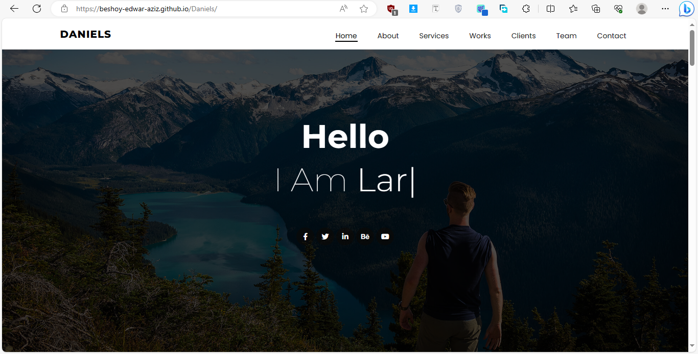

Project Overview
"Daniels" is a visually stunning and user-friendly webpage that I developed, showcasing a seamless blend of creativity and functionality. Leveraging the power of HTML5, CSS3, and Bootstrap 5, the website offers an immersive experience with distinct sections, including Home, About, Portfolio, Services, and Contact.
Key Features:
- Home: Welcome visitors with an engaging landing page that sets the tone for the entire site.
- About: Provide a glimpse into the story behind Daniels, creating a personal connection with the audience.
- Portfolio: Showcase your work in a visually appealing manner, allowing users to explore your projects and achievements.
- Services: Clearly outline the range of services offered, emphasizing expertise and professionalism.
- Contact: Facilitate easy communication by including a contact section, ensuring potential clients or collaborators can reach out effortlessly.
Technologies Used:
- HTML5: Structured and semantic markup for content presentation.
- CSS3: Styling to enhance the visual appeal and user experience.
- Bootstrap 5: A responsive and mobile-first design framework for seamless compatibility across devices.
Role:
- As the sole developer, I conceptualized and implemented the entire project, focusing on creating a website that not only reflects the essence of Daniels but also provides a smooth and intuitive navigation experience.
Achievements:
- Successful integration of Bootstrap 5 for a modern and responsive design.
- Implementation of a clean and visually appealing layout across all sections.
- Seamless navigation and user interaction, ensuring a positive experience for visitors.
"Daniels" is not just a webpage; it's a digital representation of identity and expertise, designed to leave a lasting impression on its audience.
Tools Used
- HTML
- CSS
- JavaScript
- Bootstrap
- Git
- Github
- Responsive Design
See Live